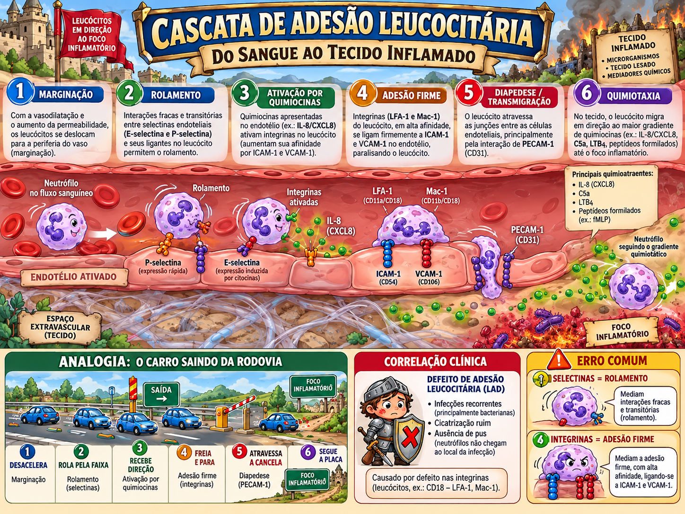

Inflamação
Dos sinais cardinais ao recrutamento celular, mediadores, cronicidade e interpretação de marcadores.

Os cinco sinais cardinais: cada um tem um mecanismo
Rubor + calor
Vasodilatação arteriolar aumenta fluxo local.
Tumor
Aumento da permeabilidade permite saída de líquido e proteínas.
Dor
Bradicinina e prostaglandinas sensibilizam nociceptores; pressão do edema também contribui.
Perda de função
É consequência combinada de dor, edema e lesão tecidual.
Eventos vasculares: por que o vaso dilata e o fluxo depois desacelera?
A vasodilatação aumenta o fluxo inicialmente. Depois, a permeabilidade aumentada faz plasma rico em proteínas sair para o interstício. O sangue remanescente fica mais viscoso, ocorre estase e os leucócitos migram para a periferia do vaso: marginação.
Cascata de adesão: selectina rola, integrina para
Leucócito aproxima do endotélio.
E/P-selectina fazem ligações fracas.
Quimiocinas elevam afinidade das integrinas.
LFA-1/Mac-1/VLA ligam ICAM/VCAM.
PECAM-1/CD31.
Ácido araquidônico: onde agem AINEs e corticoides?
libera ácido araquidônico
prostaglandinas, prostaciclina, tromboxano
leucotrienos
AINEs
Inibem COX; reduzem prostaglandinas e tromboxano conforme fármaco/dose.
Corticoides
Atuam mais a montante: reduzem PLA₂ via anexina/lipocortina e reprimem programas transcricionais como NF-κB. Por isso têm efeito anti-inflamatório mais amplo.
Como uma inflamação aguda termina?
Resolução
Agente eliminado, mediadores cessam, edema reabsorvido, tecido retorna ao estado basal.
Abscesso
Supuração/pus em infecção piogênica.
Fibrose
Dano intenso ou tecido incapaz de regenerar.
Cronicidade
Estímulo persiste; macrófagos e linfócitos dominam.
Inflamação crônica, macrófagos e granuloma
O macrófago é simultaneamente efetor, APC e organizador do reparo. A literatura usa M1/M2 como polos didáticos: M1 representa programas mais microbicidas/inflamatórios; M2, reparo e fibrose. Na biologia real, macrófagos ocupam um continuum de estados, não duas caixas rígidas.
Fase aguda e marcadores: a interpretação vale mais que o número
| Marcador | O que representa | Leitura útil |
|---|---|---|
| PCR | Pentraxina induzida sobretudo por IL-6. | Sobe e cai rápido; ótima para acompanhar atividade; inespecífica. |
| VHS | Sedimentação de hemácias, muito influenciada por fibrinogênio. | Mais lenta; útil em cronicidade, mas cheia de confundidores. |
| Procalcitonina | Marcador que tende a subir em infecção bacteriana sistêmica. | Aumenta probabilidade, não fecha diagnóstico sozinha. |
| Ferritina | Estoque de ferro + reagente de fase aguda. | Alta pode refletir inflamação, não apenas excesso de ferro. |
| Fibrinogênio | Reagente de fase aguda positivo. | Eleva VHS. |
| Transferrina | Reagente negativo de fase aguda. | Cai na inflamação. |

Sepse e lactato: corrigindo uma formulação perigosa
O material-base acerta ao dizer que sepse é diagnóstico clínico e que procalcitonina não fecha o diagnóstico. A correção necessária é evitar a frase “lactato transforma infecção grave em choque”. Lactato é marcador de gravidade/hipoperfusão no contexto clínico. Choque séptico exige um conjunto de critérios hemodinâmicos/metabólicos, não lactato isolado.
Qual associação está correta?